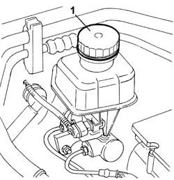

3330C40 brake fluid reservoir plug - r + r
- Path
- Procedures > 33 BRAKES > 3330 HYDRAULIC BRAKING SYSTEM > 3330C BRAKE PUMP, RESERVOIR AND LOAD PROPORTIONING VALVE > 3330C40 brake fluid reservoir plug - r + r
- Kind
- repair procedure (removal / refitting; the operation number is the code)
- Applies to
- all engines; all production periods
- Interactive page
- https://sloeber94.github.io/elrnDB-lThss/en/#/78607
Applies to: all engines; all production periods
 Removing
Removing
 Refitting
Refitting1. Undo the brake fluid reservoir plug and remove it.

Applies to: all engines; all production periods
Refitting
Removing- Tighten the plug on the brake fluid reservoir.